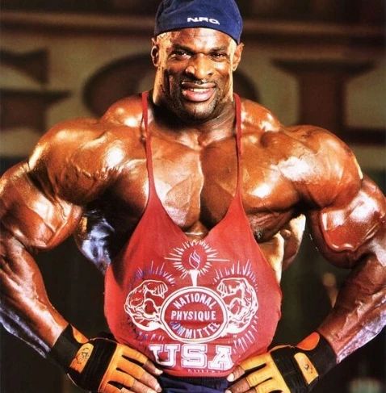

 Manolo Díaz +15 años en nuestra familia Estudios Licenciado en Entrenamiento Deportivo Licenciado en Educación fisica Licenciado en Ciencias del Deporte Licenciado en Rehabilitación Física
Luis Ramírez +8 años en nuestra familia Estudios Licenciado en Ciencias de la Nutrición Licenciado en Kinesiología Licenciado en Fisioterapia Licenciado en Nutrición y Dietética Licenciado en Ciencias de la Salud